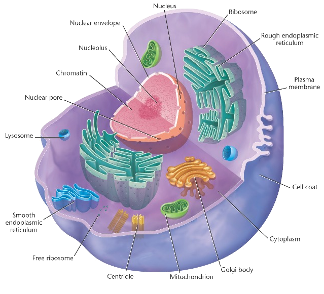

Cell Structure
| Molecule | Description |
| Cell Membrane | Controls what in and out of the cell, protect and support the cell |
| Nucleus | Control center of the cell, surrounded by nuclear membrane, contains DNA(Genetic), and make RNA from DNA |
| Mitochondroia | Two-membrane structured molecule. Make ATP, energy for cell to use |
| Ribosomes | Protein making machine, joining amino acids together to make protein |
| Endoplasmic Reticulum (ER) | Many folded membranes, moving things around the cell. The Smooth ER move lipid, and Rough ER moves protein. |
| Golgi Body | The Post office, sorts and packs proteins for export |
| Lysosomes | Contain digestive enzymes to remove the junk, break down old and defective part of the cell |
| Vacuole | Many small molecules to store water |
| Centrioles | Organize spindle fibers, chormosomes during cell division. |
| Cytoplasm | Jelly-like material that contains all organeles, 80% is water. It is the place for chemical reactions to happen, and maintain a constant PH. |
Cellular Respiration
Cellular Respiration happens in MITOCHONDRIA.It release chemical energy stored in glucose, and release them as smaller molecules called ATP.
Aerobic or Anaerobic?
Aerobic, because it uses its gill to breath air, and using air help it to release more ATP, although it takes a longer and more complex process. It starts in cytoplasm, and end in mitochondria.
C6H12O6 + O2 = CO2 + H2O + 36 ATP
C6H12O6 + O2 = CO2 + H2O + 36 ATP
ATP, ADP
ATP:Adenosine Triphosphate
ADP:Adenosine Diphosphate
Contains less energy tha glucose, use as short term energy source And when the last phosphate of ATP is removed, the energy will power up the ocean wolf.
Homostasis
It need to live in the ocean to maintain homostasis, and transport substances in and out of the body.
Passive Transport -- Don't Require Energy
Osmosis
Occurs because of the polarity of water, they can move through the membrane eaisly most of the times by interacting with other polar molecules. It move from hypertonic solution to hypotonic solutoin. It move constantly in the isotonic solution. That means when Ocean wolves swim into the river or spring, the salt in the water decreases, their body become hypertonic, and the water will flow in their body, they became too big , and finally lyse(die) from that. If there is too much salt, they will shrink, because all the water in their body will move out of their body.
Diffusion
After breathing the air through the gill, the gas exchange happend as diffusion. Diffusion is the process which molecules move randomly from area of higher concentration to lower concentration.
Facilitated Diffusion
Using special carrier protein with a central channel to select which kind of molecules to move across the membrane from higher concentratoin to lower concentration. Most of the time, glucose arre transported using this way.
Active Transport -- Need Energy
When energy (ATP) is required. Occurs when molecules are too big or moving against concentration gradient with th help from protein. The action that take in and out the cell are called Endocytosis and Exocytosis. All the substances that enters the cell are stored inside vesicle. Ocean wolf use active transport to absorb glucose.